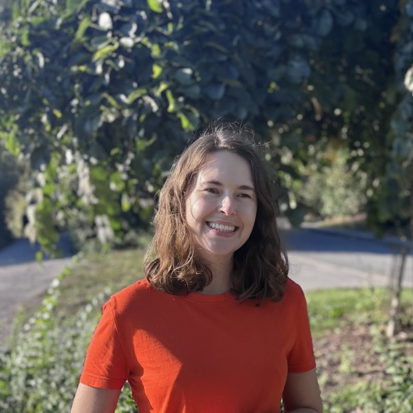
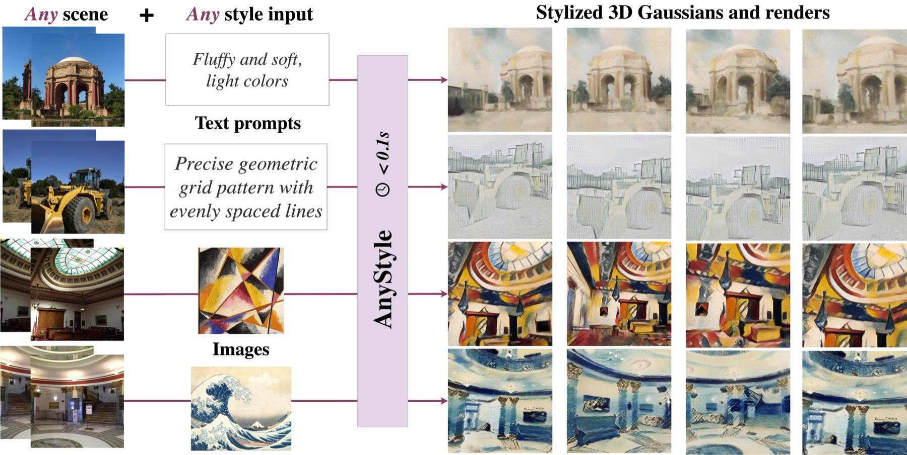
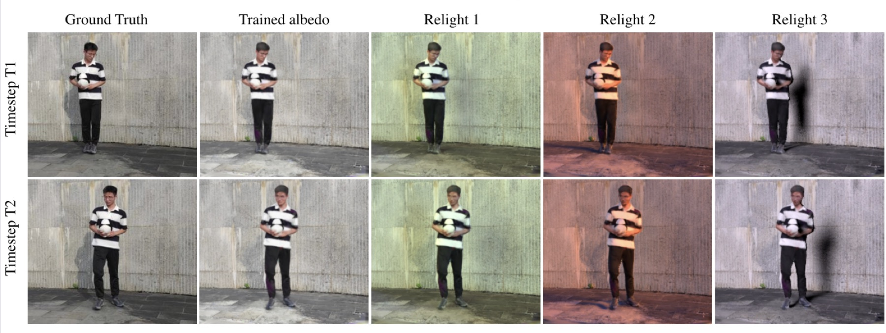
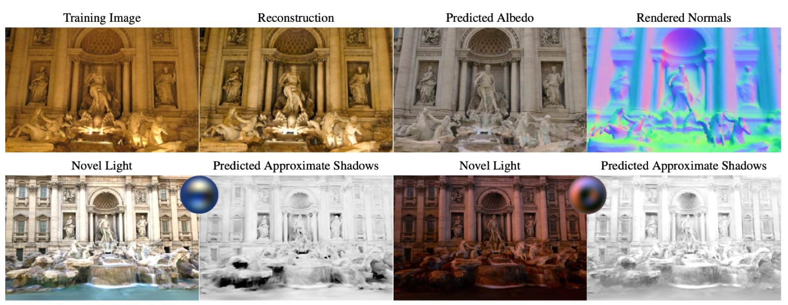
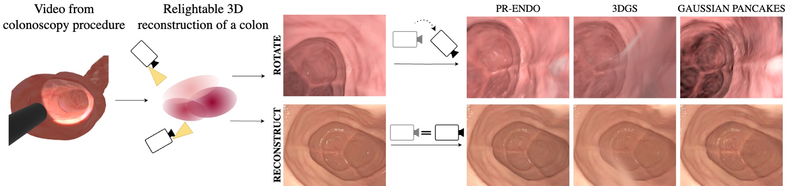
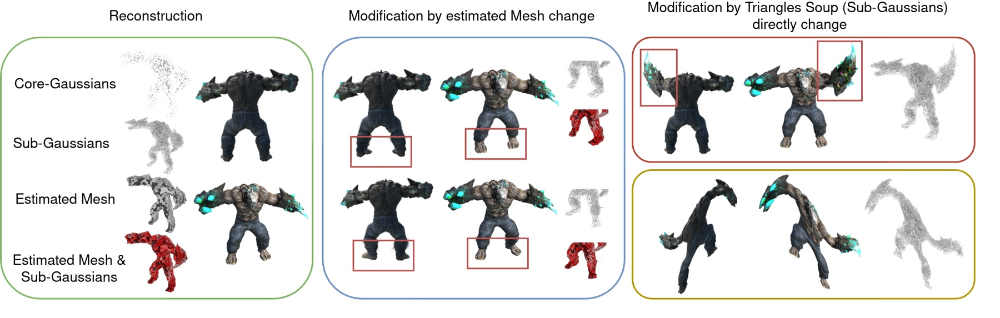
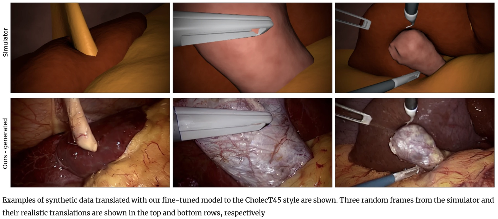

Joanna Kaleta
I am a PhD researcher in computer vision at Warsaw University of Technology and the Sano Centre for Computational Personalized Medicine, supervised by Prof. Tomasz Trzciński and Dr Marek Kowalski. I am currently a visiting PhD researcher in the GrUVi Lab at Simon Fraser University, hosted by Prof. Andrea Tagliasacchi. Earlier in 2026, I visited the Computer Vision and Geometry group at ETH Zürich, hosted by Prof. Marc Pollefeys.
I work on combining 3D spatial representations with generative models to reconstruct, understand, and generate spatially faithful 3D scenes. My research spans feed-forward 3D reconstruction, Gaussian Splatting, neural rendering, diffusion models, and video-based scene representations.
Email / CV / Google Scholar / GitHub / LinkedIn

Publications
Selected publications — the full list is on Google Scholar.
{kind=link}

ACM Multimedia 2026
Feed-forward, pose-free 3D reconstruction and zero-shot stylization with text or image conditioning.
project page · paper · code
{kind=link}

CVPR 2026 Highlight
Scene motion as an additional supervisory signal for disentangling material properties from global illumination.
project page · paper · code
{kind=link}

WACV 2025 Oral
Relightable Gaussian Splatting from unconstrained photo collections, using precomputed radiance transfer.
{kind=link}

MICCAI 2025
Relightable Gaussian Splatting for colonoscopy, exploiting the co-location of camera and light source.
project page · paper · code
{kind=link}

NeurIPS 2024
A hierarchical, editable Gaussian Splatting representation for dynamic 3D scenes.
project page · paper · code
{kind=link}

NeurIPS 2023 Workshop on Diffusion Models NVIDIA Best Student Paper Award
Medical Sim2Real: generating fully annotated, realistic endoscopic data from medical-simulator renders. Extended version published in IJCARS.